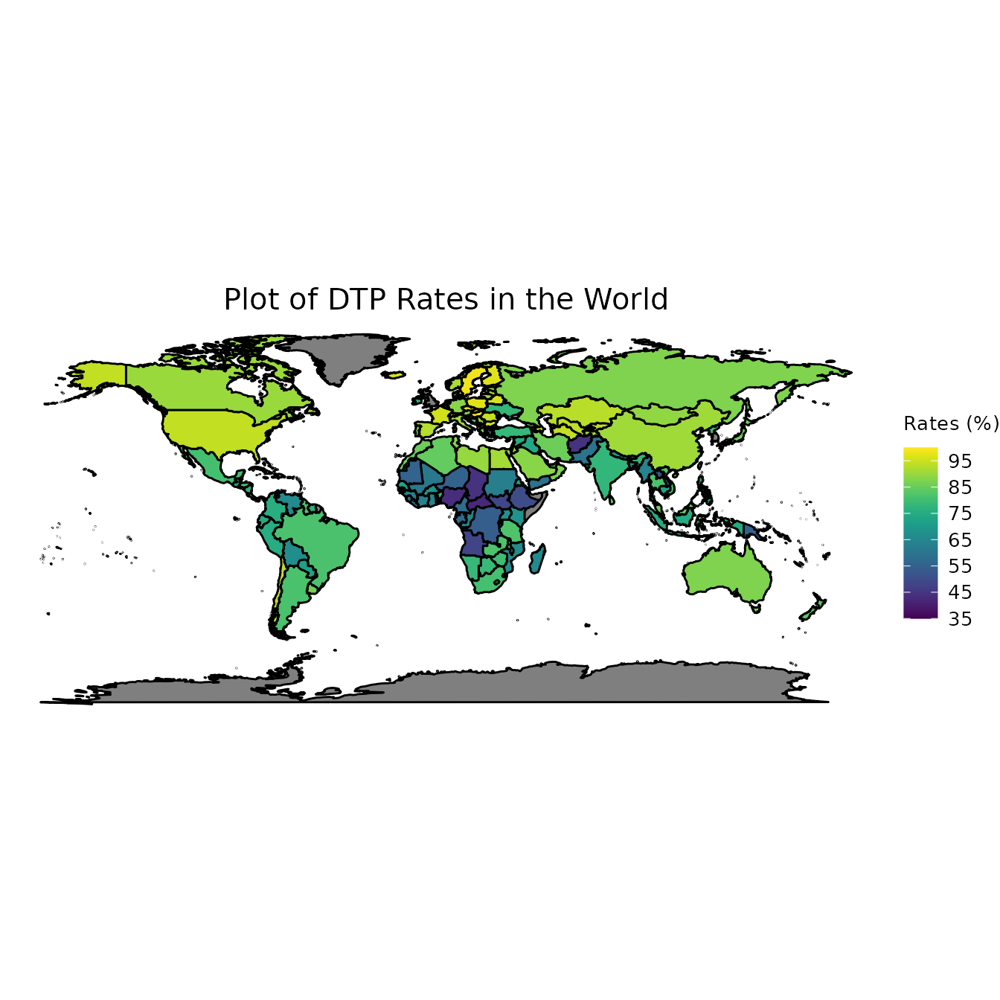

This article serves to examine the relationship between worldwide pertussis cases and worldwide DTP cases. The dataset we will utilize comes from the World Health Organization (WHO) and can be found online.
In order to extract all the data we need, we will need to utilize multiple files found in the extdata folder of this package. The first dataset, population_country, contains the number of individuals in each country around the globe.
# Population Numbers
population_file <- system.file(
"extdata",
"population-by-country.xlsx",
package = "CAvaccines"
)
population_country <- suppressMessages(
readxl::read_excel(population_file,
na = "",
range = "B2:D191",
col_names = FALSE))
names(population_country) <- c("ISO_code", "Year", "Population")
population_country$Year <- NULLThe second dataset, incidence_series, contains the number of pertussis cases each year from 1980 till 2018 across the world.
# Incidence
incidence_file <- system.file(
"extdata",
"incidence_series.xls",
package = "CAvaccines"
)
incidence_series <- suppressMessages(
readxl::read_excel(incidence_file,
sheet = "Pertussis",
na = "",
col_names = TRUE))
incidence_series <- incidence_series %>%
tidyr::gather(Year, Cases, -c(WHO_REGION, ISO_code, Cname, Disease)) %>%
na.omit()
# Adjust several country names. In particular, several country names have the
# characters "(the)" appended to the end of the name. We remove such characters
# from the end of the country name. In addition, we change the names of USA and
# Russia.
incidence_series$Cname <- stringr::str_remove(incidence_series$Cname, " \\(.*\\)")
incidence_series$Cname[incidence_series$Cname == "United States of America"] <- "USA"
incidence_series$Cname[incidence_series$Cname == "Russian Federation"] <- "Russia"
# Combine incidence data with population count data
incidence_series <-
dplyr::left_join(incidence_series, population_country, by = "ISO_code") %>%
dplyr::mutate(Cases = Cases / Population)Lastly, the third dataset we will combine, coverage_series, contains information regarding vaccination coverage rates across the globe for the years 1966-2018.
# Coverage
coverage_file <- system.file(
"extdata",
"Numeric_coverage_series.xls",
package = "CAvaccines"
)
coverage_series <- suppressMessages(
readxl::read_excel(coverage_file,
sheet = "world_coverage",
na = "",
range = readxl::cell_cols("A:G"),
col_names = TRUE))
# Convert the expand column into multiple columns with each vaccine that was
# administered and convert percent coverage into a decimal.
coverage_series <- coverage_series %>%
dplyr::rename(Percent_coverage = Percent_covrage) %>%
dplyr::mutate(Percent_coverage = Percent_coverage / 100) %>%
tidyr::spread(Vaccine, Percent_coverage)
# Convert the year to a character and remove all variables that have more than
# 40% missing data
coverage_series$Year <- as.character(coverage_series$Year)
coverage_series <- coverage_series[, which(colMeans(!is.na(coverage_series)) > 0.40)]
# Fixing country names
coverage_series$Cname <- stringr::str_remove(coverage_series$Cname, " \\(.*\\)")
coverage_series$Cname[coverage_series$Cname == "Brunei Darussalam"] <- "Brunei"
coverage_series$Cname[coverage_series$Cname == "Cabo Verde"] <- "Cape Verde"
coverage_series$Cname[coverage_series$Cname == "Congo"] <- "Republic of Congo"
coverage_series$Cname[coverage_series$Cname == "Côte d'Ivoire"] <- "Ivory Coast"
coverage_series$Cname[coverage_series$Cname == "Democratic People's Republic of Korea"] <- "North Korea"
coverage_series$Cname[coverage_series$Cname == "Lao People's Democratic Republic"] <- "Laos"
coverage_series$Cname[coverage_series$Cname == "North Macedonia"] <- "Macedonia"
coverage_series$Cname[coverage_series$Cname == "Republic of Moldova"] <- "Moldova"
coverage_series$Cname[coverage_series$Cname == "Syrian Arab Republic"] <- "Syria"
coverage_series$Cname[coverage_series$Cname == "United Republic of Tanzania"] <- "Tanzania"
coverage_series$Cname[coverage_series$Cname == "Viet Nam"] <- "Vietnam"
coverage_series$Cname[coverage_series$Cname == "United States of America"] <- "USA"
coverage_series$Cname[coverage_series$Cname == "Russian Federation"] <- "Russia"Now that we have read in all our data and properly formatted it, the next step is to visualize our data. In order to achieve this, we will find the average vaccination rates in each country and then plot those on a world map.
# Finding average vaccination rates in each country
to_map <- coverage_series %>%
dplyr::group_by(Cname) %>%
dplyr::summarize(BCG = mean(BCG*100, na.rm = T),
DTP1 = mean(DTP1*100, na.rm = T),
DTP3 = mean(DTP3*100, na.rm = T),
HepB3 = mean(HepB3*100, na.rm = T),
MCV1 = mean(MCV1*100, na.rm = T),
TT2plus = mean(TT2plus*100, na.rm = T),
.groups = "drop")
# Determine min and max values. This will allows us to make a nicer looking plot
# with more informative shading
min_v = DescTools::RoundTo(min(to_map$DTP3, na.rm = T), 5)
max_v = DescTools::RoundTo(max(to_map$DTP3, na.rm = T), 5)
diff = max_v - min_v
# Based on min and max values, determine optimal breaks. We stipulate
# that there should be at least five breaks
if (diff <= 5){
breaks = seq(min_v, max_v, 1)
} else if (diff <= 25){
breaks = seq(min_v, max_v, 5)
} else {
breaks = seq(min_v, max_v, 10)
}
countries = ggplot2::map_data("world")
# setdiff(to_map$Cname, countries$region)
# setdiff(countries$region, to_map$Cname)
# Combine mapping data and our data
world_map = dplyr::left_join(countries, to_map, by = c("region" = "Cname"))
# Create map
ggplot(data = world_map, aes(x = .data$long, y = .data$lat, group = .data$group, fill = DTP3)) +
coord_quickmap() + theme_void() +
geom_polygon(color = "black") +
viridis::scale_fill_viridis(option = "viridis", breaks = breaks, limits = c(min_v, max_v)) +
theme(plot.title = element_text(hjust = 0.5, size = 15),
legend.title = element_text(vjust = 2, size = 10), legend.text = element_text(size = 10)) +
labs(title = "Plot of DTP Rates in the World", fill = "Rates (%)")
The final step is to combine everything together and try to predict the number of cases based on the vaccination rates worldwide. As an example, we will focus on the year 2015.
# Combine data
incidence_series_2015 <- incidence_series %>% dplyr::filter(Year == "2015")
coverage_series_2015 <- coverage_series %>% dplyr::filter(Year == "2015")
coverage_series_2015$TT2plus <- NULL
combined_2015 <- dplyr::full_join(incidence_series_2015, coverage_series_2015,
by = c("WHO_REGION", "ISO_code",
"Cname", "Year")) %>%
dplyr::select(c(Cases, BCG, DTP1, DTP3, HepB3, MCV1, Pol3)) %>%
na.omit() %>%
scale() %>%
as.data.frame()
# Run a linear regression and compute the test R2 value
set.seed(0)
t_sample = caTools::sample.split(combined_2015$Cases, SplitRatio = 0.7)
t_train = subset(combined_2015, t_sample == TRUE)
t_test = subset(combined_2015, t_sample == FALSE)
lm <- stats::lm(Cases ~., data = t_train)
summary(lm)
#>
#> Call:
#> stats::lm(formula = Cases ~ ., data = t_train)
#>
#> Residuals:
#> Min 1Q Median 3Q Max
#> -0.4592 -0.3527 -0.2263 -0.0620 4.8742
#>
#> Coefficients:
#> Estimate Std. Error t value Pr(>|t|)
#> (Intercept) -0.08086 0.09711 -0.833 0.408
#> BCG 0.04164 0.15337 0.272 0.787
#> DTP1 -0.04643 0.25908 -0.179 0.858
#> DTP3 0.95612 1.45467 0.657 0.513
#> HepB3 -0.81563 1.36304 -0.598 0.552
#> MCV1 -0.22438 0.28365 -0.791 0.432
#> Pol3 0.15761 0.44761 0.352 0.726
#>
#> Residual standard error: 0.7964 on 63 degrees of freedom
#> Multiple R-squared: 0.02868, Adjusted R-squared: -0.06383
#> F-statistic: 0.31 on 6 and 63 DF, p-value: 0.9295
predict_lm <- lm %>% stats::predict(t_test)
print(paste("Test R2 Linear:", round(caret::R2(predict_lm, t_test$Cases), 4)))
#> [1] "Test R2 Linear: 0.0528"